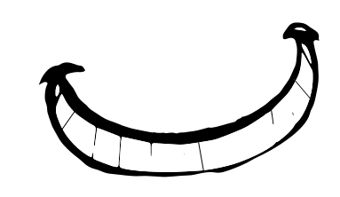
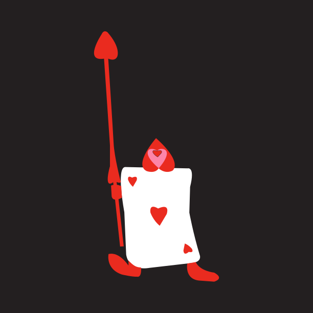

Alice in Wonderland
We are all mad here!


Alice's Adventures in Wonderland (commonly shortened to Alice in Wonderland) is an 1865 novel written by English author Charles Lutwidge Dodgson under the pseudonym Lewis Carroll. It tells of a girl named Alice falling through a rabbit hole into a fantasy world populated by peculiar, anthropomorphic creatures. The tale plays with logic, giving the story lasting popularity with adults as well as with children. It is considered to be one of the best examples of the literary nonsense genre. Its narrative course and structure, characters and imagery have been enormously influential in both popular culture and literature, especially in the fantasy genre.

Painting the roses red. We're painting the roses red. We dare not stop Or waste a drop, So let the paint be spread. We're painting the roses red. We're painting the roses red.

I'm late. I'm late. For a very important date. No time to say "Hello, Goodbye". I'm late, I'm late, I'm late.

Sorry, you're much too big. Simply impassible.